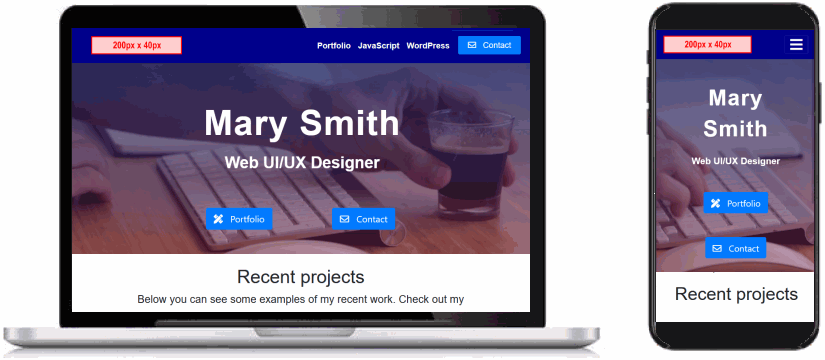
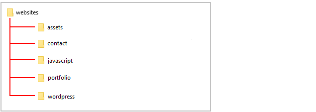
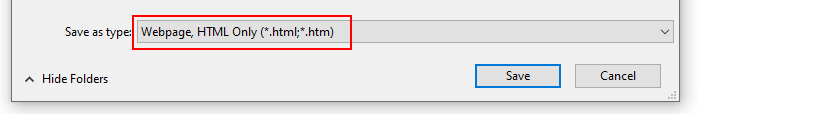
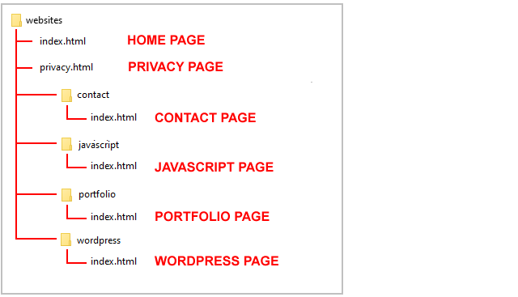

Introduction
In this project you will create your personal website, based on sample website templates. Yout website will have the following six web pages:
- Home page and Privacy page (in main folder)
- Portfolio page (in /portfolio sub-folder)
- Contact page (in /contact sub-folder)
- WordPress page (in /wordpress sub-folder)
- JavaScript page (in /javascript sub-folder)
A single stylesheet named global.css will control the appearance of all the above web pages.
You can display a sample finished version of the website by clicking the image or text link below. The finished sample website will open in a new tab of your web browser

Sample Portfolio Website
Creating your website sub-folders
Your first step is to create the sub-folders that will store the your web pages and other resources used by those various pages of your personal portfolio website.
- Inside your 'main' websites folder, create the following sub-folders (if they do not already exist):
websites/assets
websites/contact
websites/javascript
websites/portfolio
websites/wordpress

- Next, inside your websites/assets sub-folder, create the following sub-folders (if they do not already exist):
websites/assets
websites/assets/css
websites/assets/img
websites/assets/pdfs
websites/assets/videos
Renaming your current home page
Your websites folder currently contains a file named index.html that lists and links to the exercise files your created earlier in this course.
Rename this file to exercises.html.
If you have already done this, and then created a new index.html file, please rename this file to something else, such as index-old.html.
Downloading six web pages
Now you will download the following six web pages.
In each case, right-click anywhere in the web page and choose View Page Source from the context menu displayed.
Next, right-click anywhere on the web page source and choose Save as... (Chrome) or Save Page As... (Firefox) from the context menu displayed.
Ensure the Save as type: dropdown list is set to Webpage, HTML only (*.HTML, *.htm).

- To your 'main' websites folder, download this index.html web page that will become your new 'home page'.
- Also to your 'main' websites folder, download this privacy.html web page.
- To your websites/contact sub-folder, download this index.html web page.
- To your websites/portfolio sub-folder, download this index.html web page.
- To your websites/javascript sub-folder, download this index.html web page.
- To your websites/wordpress sub-folder, download this index.html web page.
You now have all six web pages you need for your personal website.
See the folder and file structure below.

Downloading placeholder assets
Next, you need to download some placeholder asset files for your web pages.
Right-click on each image below, choose Save Image As from the context menu, and download it to your websites/assets/img sub-folder.
Now, download the following background video file to your websites/assets/videos sub-folder.
home-video.mp4
Finally, download the following sample CV in Adobe Acrobat format to your websites/assets/pdfs sub-folder.
cv-sample.pdf
Downloading the global stylesheet file
Download the following stylesheet file to your websites/assets/css sub-folder.
global.css
This stylesheet file controls the appearance of all the pages on your personal website (except individual project web pages).
Downloading the bootstrap-custom.css stylesheet
This CSS file has a few updates since you last downloaded it.
- The red-border visual guides have been removed.
- The size of all text elements is 20% larger. (Except for hero blocks headings that are set in your global.css file.)
- Hyperlink styles have been improved with a new CSS class named fancy-link. (Hyperlinks in the menu and footer are not affected.)
Download the updated stylesheet file to your websites/assets/css sub-folder.
bootstrap-custom.css
Upload your website to GitHub
The final step is to upload your website pages and folders to GitHub.
- Sign in to your GitHub account and, at the left of the screen, click the name of the repository that holds your web pages.
- On the next screen, click the Add file button and then choose Upload files from the dropdown list.

- In File/Windows Explorer on your computer, display your websites folder and then drag-and-drop the following files and sub-folders to the GitHub tab in your web browser.

- Scroll down to the bottom of the GitHub screen, and accept or edit the short message (Add files via upload) in the Commit changes box.
Finally, click the green Commit changes button to upload your files and folders.
Your web pages are now published on GitHub. Your Home page has a web address similar to the following, where username is the username you have chosen for your GitHub account:
https://username.github.io/index.html
or, simply:
https://username.github.io
It may take a few minutes for your uploaded files to appear on GitHub.
Return to Contents.